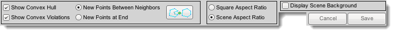

Introduction
Polygons in Torque 2D are excellent visual tools to do everything
from quickly prototyping the design of a level to showing interesting
visual effects. They are reminiscent of older arcade games, like
Asteroids or Battlezone. Creating them is easy through the standardized
editor used for Polygons and Collision Hulls.
Creating a Polygon
The first part of using the Polygon Editor is to create a Polygon in
your Scene. Do this by selecting the Create Tab. At the bottom find the
Polygon Button.
Click on this button, then drag and drop a Polygon into your Scene. You
now have an empty ShapeVector Object, which is your Polygon. It is now
ready to have its lines and colors assigned.
To open the Polygon Editor, select the Polygon object in your Scene,
then move the cursor near the top so the Edit Buttons appear. Click on
the button labeled 'Edit This Polygon'.
Polygon Editor Layout
This is where the visual editing of polygons is performed. Click
anywhere within this window to create a new Point. The default polygon
that will display will be a rectangle in the size of the Object that it
originates from. All points of a Polygon must exist within this area -
you will not be able to place or drag any points outside of this.
The Point List displays the relative positioning of each point within
the Main Window. Points can have their locations edited by typing in
the X and Y text fields, and the point can be removed entirely by
pressing the X button to the right of each Point List entry.
At the bottom of the Point List is a New field, which allows adding of a
Point at a specific relative X and Y location on the Polygon.

- Show Convex Hull - Displays the Convex Hull of the Polygon.
- Show Convex Violations - Displays the points causing the Polygon to be concave as red,
- New Points Between Neighbors - Creates new points on a vector between existing points.
- New Points At End - Creates new points by creating lines between neighboring points to the location clicked.
- - Cleanup a polygon with concave points by removing the offending points.
- Square Aspect Ratio - Displays the contents of the Main Window as a square filling the full window.
- Scene Aspect Ratio - Displays the contents of the Main Window showing the proper sizing represented within the Scene.
- Display Scene Background - Display the contents of the Scene behind the object whose Polygon is being edited.
- - Undo Last Action / Redo Last Action
Coloring the Polygon
Initially, the polygon will be just a set of white lines.
To edit these colors, click on the Polygon Object in the Scene, then click the Edit tab. You will now see the ShapeVector Panel.
- Line Color - This sets the color of the line surrounding the Polygon object.
- Red - Red Value
- Green - Green Value
- Blue - Blue Value
- Alpha - Alpha (Transparency) Value
- Fill Color - This sets the color of the area inside the Polygon object.
- Red - Red Value
- Green - Green Value
- Blue - Blue Value
- Alpha - Alpha (Transparency) Value
- Use Convex Hull as Collision Polygon - Pressing this
button will set the collision hull of this object to also be the shape
of the Polygon, providing the ShapeVector is convex. Concave polygons
cannot be used to detect collisions.
The surrounding line and internal fill can have any color combination you desire.
Script Representation
When you add a shape vector your scene and save, the following is added to the level file:
new t2dShapeVector() {
canSaveDynamicFields = "1";
Position = "-269.954 -216.576";
size = "247.287 226.848";
CollisionMaxIterations = "3";
AlphaTestValue = "-1";
PolyList = "-0.894 -0.359 -0.501 -0.905 0.378 -0.819 0.678 -0.476 0.638 0.096 0.319 " @
"0.219 0.083 0.343 -0.157 0.600 -0.231 0.969 -0.692 0.771 -0.845 0.294";
LineColor = "0.192157 0.941177 0 1";
fillColor = "0.780392 0 0 1";
FillMode = "1";
};
Conclusion
After reading this document, you should now understand how to operate the Polygon Editor in the Torque 2D editor. |